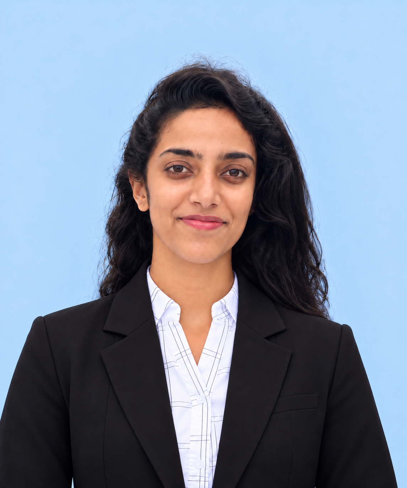

Open to internship opportunities
K.A. Adini Rashmina
I build practical solutions using Python, SQL, data pipelines, analytics and cloud technologies, while growing toward AI engineering and project delivery.

Four paths, one foundation
Pick a path. The page changes colour, and the skills and projects below highlight what belongs to it.
Skills
Highlighted skills match the path you picked.
Featured projects
Real code on GitHub. Filter by path.
My journey
Where I study and where I’ve worked.
Cloud Computing (AWS/Azure) Intern
Decode Labs (Remote)
- Secured an EC2 Ubuntu server with SSH access and tight security group rules.
- Fixed S3 bucket-policy and public-access issues on my own to host a static site.
- Built a Python Lambda function with CloudWatch log monitoring.
- Designed a DynamoDB table and documented everything on GitHub.
Bachelor of ICT (Hons.), BICT
Faculty of Technology, University of Colombo. 3rd year, expected graduation 2028.
G.C.E. Advanced Level, Technology Stream
Mahinda Rajapaksha College, Homagama. A, A, A in ICT, Science for Technology and Bio System Technology. District Rank 15, Island Rank 89.
G.C.E. Ordinary Level
Sri Palee College, Horana. 4 A, 3 B, 2 C.
Association of Accounting Technicians of Sri Lanka (AAT)
Level 1 passed (2021), Level 2 in progress. A foundation in accounting and business concepts.
Courses and certificates
Learning that backs up the projects.
Let’s work together
I’m interested in internships across data engineering, data analytics and cloud computing. Send me a message.